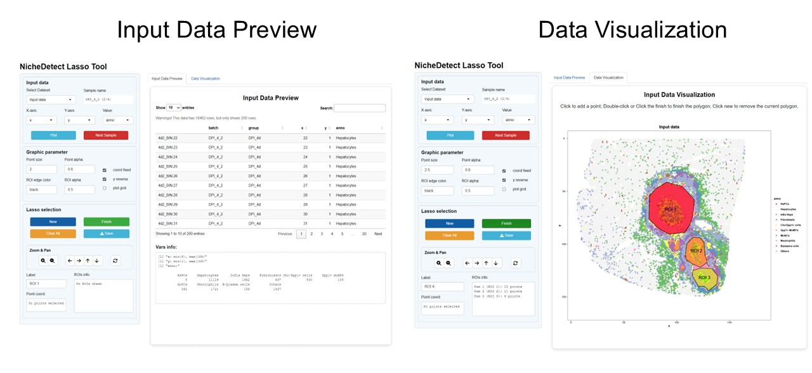
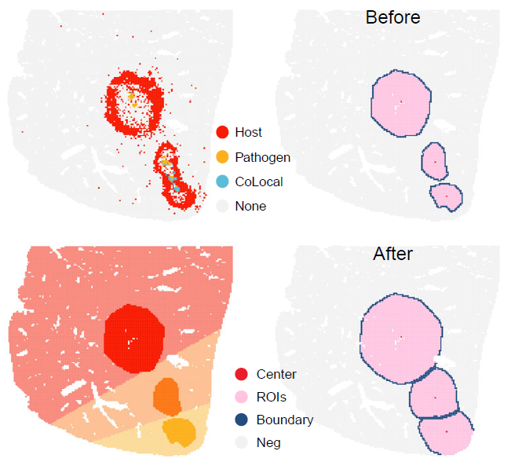
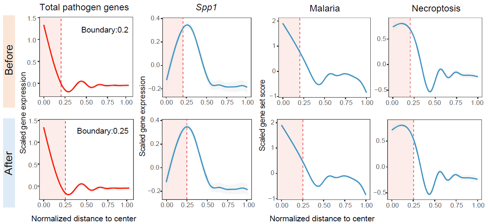
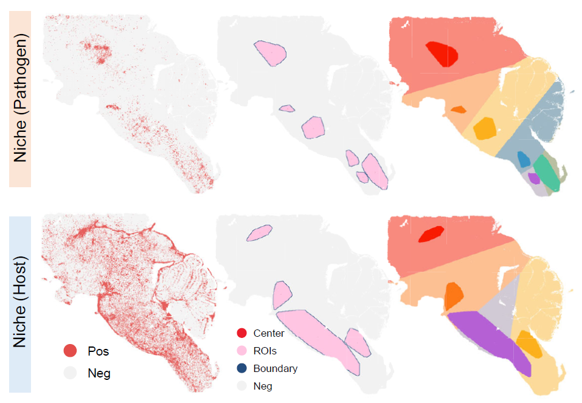
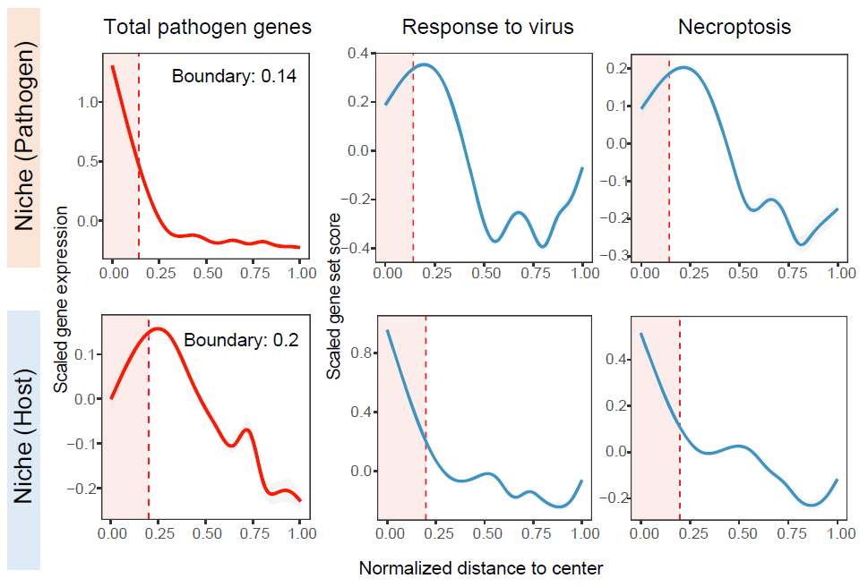
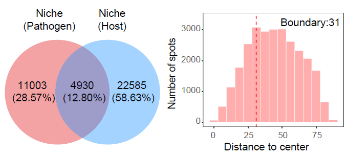
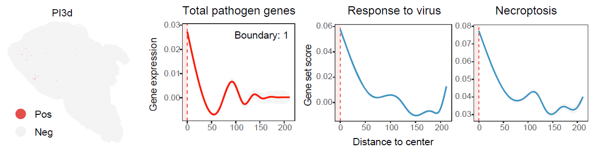

Infection-associated niche identification
Source:vignettes/05_Infection-associated_niche_identification.Rmd
05_Infection-associated_niche_identification.RmdOverview
This vignette describes how to identify infection-associated spatial
niches using STID after preprocessing, background
correction when required, and infection-associated spot detection.
STID supports three complementary niche identification
modes according to the spatial organization of positive spots:
- Foci-type niches, which represent highly localized infection-associated regions;
- Aggregated-type niches, which represent spatially clustered positive regions with broader regional structure;
- Dispersed-type niches, which represent spatially distributed positive spots without strong regional aggregation.
This vignette covers:
- preparing example
STIDobjects for niche identification; - detecting infection-associated spots from pathogen-derived and host-response signals;
- identifying foci-type niches using lasso-based spatial boundary detection;
- identifying aggregated-type niches using regional spatial transcriptomic signal aggregation;
- identifying dispersed-type niches at the positive-spot level;
- visualizing niche boundaries and distance-dependent signal profiles.
Note: Update the input object names, sample identifiers, metadata columns, pathogen gene list, host-response gene list, gene-set collections, detection thresholds, niche-detection parameters, plotting colors, output group names, and figure paths according to the dataset used in your analysis.

Overview of the three infection-associated niche identification strategies.
Example data
The foci-type example uses the AE STID_obj_after object
generated in the pathogen background correction workflow，and the
analysis focuses on the DPI_4d sample.
The aggregated-type and dispersed-type examples use the
PI4d and PI3d samples from the
stRNA_JEV dataset, respectively.
The stRNA_JEV example data can be downloaded from Figshare.
Note: Replace
./stRNA_JEV.rds,STID_obj_after,DPI_4d,PI4d, andPI3dwith the corresponding file path, object names, and sample identifiers used in your dataset.
stRNA <- readRDS(file = "./stRNA_JEV.rds")
stRNA <- suppressMessages(UpdateSeuratObject(stRNA))
# stRNA <- NormalizeData(stRNA)
meta_data <- stRNA@meta.data
table(meta_data$new_samp)If the input Seurat object already contains reliable normalization,
metadata, and annotation fields, it can be converted directly into an
STID object. Otherwise, run the preprocessing workflow
described in the loading and preprocessing vignette before
continuing.
Note: Confirm that the metadata columns passed to
as.STID(), includingnew_samp,new_cell, andgrpin this example, are present instRNA@meta.data.
Construct the STID object
The JEV example uses viral genes as pathogen-derived features and selected interferon- and inflammation-associated genes as host-response markers.
Infection-associated spot detection
Niche identification requires positive spots as input. In this example, pathogen-associated spots are defined from aggregated viral gene signal, and host-response spots are defined from either host-response genes or gene-set scores.
Note: If positive spots have already been generated in the infection-associated spot detection workflow, this section can be skipped. Update the metadata keys in later sections to match the previously generated detection results.
COLOR_DIS_CON <- list(
dis = c("grey95", "#E34D4A"),
con = c("#440154FF", "#3B528BFF", "#21908CFF", "#5DC863FF", "#FDE725FF")
)
pathogen_signal <- GetGeneStat(
STID_obj = STID_obj,
features = pathogen_genes,
prefix = "all_gene",
func = "sum"
)
STID_obj <- AddMetaColumn(
STID_obj = STID_obj,
add_data = pathogen_signal,
meta_key = "raw",
ignore_rownm = FALSE
)
pathogen_signal_columns <- grep(
"all_gene",
colnames(STID_obj@meta.data),
value = TRUE
)
STID_obj <- SpotDetect_Gene(
STID_obj = STID_obj,
features = pathogen_genes,
feature_colnm = pathogen_signal_columns,
PosThres_prob = 0,
PosThres_count = 1,
col = COLOR_DIS_CON,
black_bg = FALSE,
pt_size = 0.25,
blur_method = NULL,
blur_n = 1,
blur_sigma = 0.5,
plot_method = "single",
grp_nm = "JEV_correct_before_all_gene_white"
)
STID_obj <- SpotDetect_Gene(
STID_obj = STID_obj,
features = host_response_genes,
feature_colnm = pathogen_signal_columns,
PosThres_prob = 0,
PosThres_count = 4,
col = COLOR_DIS_CON,
black_bg = FALSE,
pt_size = 0.25,
blur_method = NULL,
blur_n = 1,
blur_sigma = 0.5,
plot_method = "single",
grp_nm = "JEV_correct_before_host_gene_white"
)
Gene_Geneset <- STID::Gene_Geneset
pcd_geneset_df <- Gene_Geneset$Mouse$Geneset$Mouse_PCD_geneset
pcd_geneset_list <- lapply(pcd_geneset_df, function(x) na.omit(x))
STID_obj <- SpotDetect_Geneset(
STID_obj = STID_obj,
geneset_list = pcd_geneset_list,
score_method = "AddModuleScore",
n_iter = 5,
nbin = 24,
seed = 10,
PosThres_prob = 0.75,
PosThres_score = 0,
pt_size = 0.25,
col = COLOR_DIS_CON,
black_bg = FALSE,
blur_method = NULL,
plot_method = "single",
grp_nm = "JEV_correct_before_PCD_white"
)
viral_response_geneset_df <- Gene_Geneset$Mouse$Geneset$Mouse_GO_BP_Detect_viral_geneset
colnames(viral_response_geneset_df) <- gsub(
"GOBP_",
"",
colnames(viral_response_geneset_df)
)
viral_response_geneset_list <- lapply(viral_response_geneset_df, function(x) na.omit(x))
STID_obj <- SpotDetect_Geneset(
STID_obj = STID_obj,
geneset_list = viral_response_geneset_list,
score_method = "AddModuleScore",
n_iter = 5,
nbin = 24,
PosThres_prob = 0.75,
PosThres_score = 0,
pt_size = 0.25,
col = COLOR_DIS_CON,
black_bg = FALSE,
blur_method = NULL,
plot_method = "single",
grp_nm = "JEV_correct_before_GO_viral_white"
)Foci-type niche identification
For foci-type niches, clear infectious foci were first confirmed in
H&E images. NicheDetect_Lasso was then used to
delineate foci-associated niches by integrating infected spots,
host-response spots, cell-type annotations, and H&E histology.
Foci-type niche identification is designed for highly localized
infection-associated regions. This example uses the background-corrected
object STID_obj_after from the background correction
workflow and focuses on the DPI_4d sample.
Note: Replace
STID_obj_after,DPI_4d,anno,batch, color vectors, marker genes, gene-set names, and metadata keys with the corresponding values from your dataset.
STID_obj_foci <- STID_obj_after
foci_celltype_colors <- c(
"HsPCs" = "#E41A1C",
"Hepatocytes" = "grey95",
"Infla Heps" = "#4DAF4A",
"Fibroblasts" = "#984EA3",
"Cho/Spp1+ cells" = "#FFFF33",
"Spp1+ MoMFs" = "#FF7F00",
"MoKCs" = "#377EB8",
"Neutrophils" = "#F781BF",
"B/plasma cells" = "#A65628",
"Others" = "#8DA0CB"
)
STID_obj_lasso <- NicheDetect_Lasso(
STID_obj = STID_obj_foci,
meta_key = "coord",
group_by = "anno",
col = foci_celltype_colors,
grp_nm = "CE_lasso"
)
print(STID_obj_lasso)
foci_lasso_key <- "M2_NicheDetect_Lasso_CE_lasso"
lasso_meta <- GetMetaData(
STID_obj_lasso,
meta_key = foci_lasso_key,
add_coord = FALSE
)[[1]]
Foci-type niche boundary detected using lasso-based spatial delineation.
Visualize foci-type niche regions
After niche identification, boundary spots were defined using kNN-based neighborhood relationships, and each ROI center was estimated from median spot coordinates. Distances to the nearest center were then calculated, and bystander spots were assigned to the closest ROI.
The following plots show the spatial distribution of lasso-defined regions of interest and the corresponding region labels.
FOCI_DARK <- c("#F81B02FF", "#FC7715FF", "#FCB11C")
FOCI_LIGHT <- c("#F88A7E", "#FCC093", "#FCDB9A")
Plot_Spatial(
plot_data = lasso_meta,
x_colnm = "x",
y_colnm = "y",
group_by = "ROI_region",
facet_grpnm = "batch",
datatype = "discrete",
col = list(dis = c("grey95", "#FFC4E1", "#244D7F", "#EB1E2C"), con = NULL),
pt_size = 1,
vmin = NULL,
vmax = "p99",
title = NULL,
subtitle = NULL,
black_bg = FALSE
)
Plot_Spatial(
plot_data = lasso_meta,
x_colnm = "x",
y_colnm = "y",
group_by = "All_ROI_label2",
facet_grpnm = "batch",
datatype = "discrete",
col = list(dis = c(FOCI_LIGHT, FOCI_DARK), con = NULL),
pt_size = 1.1,
vmin = NULL,
vmax = "p99",
title = NULL,
subtitle = NULL,
black_bg = FALSE
)Expand foci-type niche boundaries
NicheExpand can refine initial niches by adding
bystander spots within a selected distance from each ROI boundary.
Niche expansion can be used to include spatial neighborhoods surrounding the detected foci. The expansion distance should be selected according to platform resolution, bin size, and the expected physical scale of infection-associated regions.
STID_obj_expand <- NicheExpand(
STID_obj = STID_obj_lasso,
meta_key = foci_lasso_key,
pos_colnm = "ROI_label",
center_colnm = "ROI_center",
expand_dist = 8,
grp_nm = "CE"
)
print(STID_obj_expand)
foci_expand_key <- "M2_NicheExpand_CE"
expand_meta <- GetMetaData(
STID_obj_expand,
meta_key = foci_expand_key,
add_coord = TRUE
)[[1]]Note: Update
expand_distaccording to the bin size and the expected spatial radius of the niche boundary in your dataset.
Plot_Spatial(
plot_data = expand_meta,
x_colnm = "x",
y_colnm = "y",
group_by = "ROI_region",
facet_grpnm = "batch",
datatype = "discrete",
col = list(dis = c("grey95", "#FFC4E1", "#244D7F", "#EB1E2C"), con = NULL),
pt_size = 1,
vmin = NULL,
vmax = "p99",
title = NULL,
subtitle = NULL,
black_bg = FALSE
)
Plot_Spatial(
plot_data = expand_meta,
x_colnm = "x",
y_colnm = "y",
group_by = "All_ROI_label2",
facet_grpnm = "batch",
datatype = "discrete",
col = list(dis = c(FOCI_LIGHT, FOCI_DARK), con = NULL),
pt_size = 1.1,
vmin = NULL,
vmax = "p99",
title = NULL,
subtitle = NULL,
black_bg = FALSE
)
Expanded foci-type niche regions.
Plot distance-dependent signal profiles
STID summarizes distance-dependent gradients from niche centers to surrounding tissue. Gene-expression profiles are smoothed with GAMs, while cell-composition profiles are calculated in distance bins; both outputs can be visualized with niche boundaries annotated.
Distance profiles summarize how pathogen-derived genes, host-response genes, or gene-set scores change from the niche center toward the surrounding tissue.
foci_gene_detection_key <- "M1_SpotDetect_Gene_CE_correct_after_host_gene_white"
foci_pcd_detection_key <- "M1_SpotDetect_Geneset_CE_correct_after_PCD_white"
foci_parasite_geneset_key <- "M1_SpotDetect_Geneset_CE_correct_after_KEGG_Parasite_white"
# Profiles before niche expansion.
Plot_DistLine_Exp(
STID_obj = STID_obj_lasso,
features = c("EmuJ-002209100", "Spp1", "Il1b"),
feature_colnm = "all_gene_nFeature(sum)",
col = c("#F81B02FF", "#3B95C4FF", "#3B95C4FF", "#F81B02FF"),
facet_grpnm = "batch",
meta_key = list(c(foci_gene_detection_key, foci_lasso_key))
)
Plot_DistLine_Exp(
STID_obj = STID_obj_lasso,
features = NULL,
feature_colnm = c("Necroptosis"),
col = c("#3B95C4FF"),
facet_grpnm = "batch",
meta_key = list(c(foci_pcd_detection_key, foci_lasso_key))
)
Plot_DistLine_Exp(
STID_obj = STID_obj_lasso,
features = NULL,
feature_colnm = c("Malaria"),
col = c("#3B95C4FF"),
facet_grpnm = "batch",
meta_key = list(c(foci_parasite_geneset_key, foci_lasso_key))
)
# Profiles after niche expansion.
Plot_DistLine_Exp(
STID_obj = STID_obj_expand,
features = c("EmuJ-002209100", "Spp1", "Il1b"),
feature_colnm = "all_gene_nFeature(sum)",
col = c("#F81B02FF", "#3B95C4FF", "#3B95C4FF", "#F81B02FF"),
facet_grpnm = "batch",
meta_key = list(c(foci_gene_detection_key, foci_expand_key))
)
Plot_DistLine_Exp(
STID_obj = STID_obj_expand,
features = NULL,
feature_colnm = c("Necroptosis"),
col = c("#3B95C4FF"),
facet_grpnm = "batch",
meta_key = list(c(foci_pcd_detection_key, foci_expand_key))
)
Plot_DistLine_Exp(
STID_obj = STID_obj_expand,
features = NULL,
feature_colnm = c("Malaria"),
col = c("#3B95C4FF"),
facet_grpnm = "batch",
meta_key = list(c(foci_parasite_geneset_key, foci_expand_key))
)
Distance-dependent feature profiles for foci-type niches.
Note: Replace the marker genes, gene-set names, metadata keys, and
facet_grpnmwith values that correspond to the features and sample metadata in your dataset.
Aggregated-type niche identification
For aggregated-type niches, NicheDetect_STS
automatically identifies clustered positive regions after low-density
filtering and kNN-based refinement of positive spots. Region-level mode
uses DBSCAN and hull reconstruction to define niche regions, whereas
spot-level mode uses kNN graphs and connected components to delineate
contiguous positive-spot clusters.
Aggregated-type niche identification detects spatially clustered
regions based on pathogen-associated or host-response positive spots. In
the JEV example, the PI4d sample is used to illustrate
aggregated spatial organization.
Note: Replace
PI4d, detection metadata keys, positive-label columns,density_thres,region_detect_method, and output group names according to the spatial aggregation pattern and detection results in your dataset.
aggregated_sample_id <- "PI4d"
STID_obj_aggregated <- STID_obj
# Pathogen-associated aggregated niches.
STID_obj_aggregated <- NicheDetect_STS(
STID_obj = STID_obj_aggregated,
meta_key = "M1_SpotDetect_Gene_JEV_correct_before_all_gene_white",
spatial_scale_method = "region",
region_detect_method = "convex",
update_spots = FALSE,
ROI_size = NULL,
density_thres = 1,
pos_colnm = "Label_all_gene_nFeature(sum)",
description = NULL,
grp_nm = "STS_JEV_microbe_region",
dir_nm = "M2_NicheDetect_STS"
)
pathogen_niche_key <- "M2_NicheDetect_STS_STS_JEV_microbe_region"
pathogen_meta <- GetMetaData(
STID_obj_aggregated,
meta_key = pathogen_niche_key,
add_coord = FALSE
)[[1]]
# Host-response aggregated niches.
STID_obj_aggregated <- NicheDetect_STS(
STID_obj = STID_obj_aggregated,
meta_key = "M1_SpotDetect_Geneset_JEV_correct_before_GO_viral_white",
spatial_scale_method = "region",
region_detect_method = "convex",
update_spots = TRUE,
ROI_size = NULL,
density_thres = 0.3,
pos_colnm = "Label_RESPONSE_TO_VIRUS",
description = NULL,
grp_nm = "STS_JEV_host_region",
dir_nm = "M2_NicheDetect_STS"
)
print(STID_obj_aggregated)
host_niche_key <- "M2_NicheDetect_STS_STS_JEV_host_region"
host_meta <- GetMetaData(
STID_obj_aggregated,
meta_key = host_niche_key,
add_coord = FALSE
)[[1]]Details
Key parameters include:
-
meta_key: metadata key containing positive-spot detection results; -
pos_colnm: positive-label column used to define candidate spots; -
spatial_scale_method: spatial scale used for niche construction; -
region_detect_method: method used to delineate regional boundaries; -
density_thres: density threshold used to retain aggregated regions; -
update_spots: whether updated spot labels are written back to the object; -
grp_nm: group name used to store the aggregated niche results.
The density_thres parameter should be calibrated to the
expected compactness of pathogen-positive or host-response-positive
regions.
Visualize aggregated niches
The following plots show the spatial distributions of pathogen-associated and host-response aggregated niches.
PATHOGEN_DARK <- c("#50C49FFF", "#FC7715FF", "#FCB11C", "#F81B02FF", "#3B95C4FF", "#B560D4FF")
PATHOGEN_LIGHT <- c("#BBBFA1", "#FCC093", "#FCDB9A", "#F88A7E", "#9DB7C4", "#D1CAD4")
HOST_DARK <- c("#F81B02FF", "#FC7715FF", "#FCB11C", "#B560D4FF")
HOST_LIGHT <- c("#F88A7E", "#FCC093", "#FCDB9A", "#D1CAD4")
Plot_Spatial(
plot_data = pathogen_meta,
x_colnm = "x",
y_colnm = "y",
group_by = "ROI_region",
facet_grpnm = "new_samp",
datatype = "discrete",
col = list(dis = c("grey95", "#FFC4E1", "#244D7F", "#EB1E2C"), con = NULL),
pt_size = 1,
vmin = NULL,
vmax = "p99",
title = NULL,
subtitle = NULL,
black_bg = FALSE
)
Plot_Spatial(
plot_data = pathogen_meta,
x_colnm = "x",
y_colnm = "y",
group_by = "All_ROI_label2",
facet_grpnm = "new_samp",
datatype = "discrete",
col = list(dis = c(PATHOGEN_LIGHT, PATHOGEN_DARK), con = NULL),
pt_size = 1.1,
vmin = NULL,
vmax = "p99",
title = NULL,
subtitle = NULL,
black_bg = FALSE
)
Plot_Spatial(
plot_data = host_meta,
x_colnm = "x",
y_colnm = "y",
group_by = "ROI_region",
facet_grpnm = "new_samp",
datatype = "discrete",
col = list(dis = c("grey95", "#FFC4E1", "#244D7F", "#EB1E2C"), con = NULL),
pt_size = 1,
vmin = NULL,
vmax = "p99",
title = NULL,
subtitle = NULL,
black_bg = FALSE
)
Plot_Spatial(
plot_data = host_meta,
x_colnm = "x",
y_colnm = "y",
group_by = "All_ROI_label2",
facet_grpnm = "new_samp",
datatype = "discrete",
col = list(dis = c(HOST_LIGHT, HOST_DARK), con = NULL),
pt_size = 1.1,
vmin = NULL,
vmax = "p99",
title = NULL,
subtitle = NULL,
black_bg = FALSE
)
Spatial distribution of pathogen-associated and host-response aggregated niches.
Plot distance-dependent signal profiles
Distance profiles can be used to compare molecular signal gradients from the center of aggregated niches toward surrounding tissue.
Plot_DistLine_Exp(
STID_obj = STID_obj_aggregated,
features = c("NS5", "Ccl2"),
feature_colnm = "all_gene_nFeature(sum)",
loop_id = "D5_1",
col = c("#F81B02FF", "#3B95C4FF", "#F81B02FF"),
facet_grpnm = "grp",
meta_key = list(c("M1_SpotDetect_Gene_JEV_correct_before_all_gene_white", pathogen_niche_key))
)
Plot_DistLine_Exp(
STID_obj = STID_obj_aggregated,
features = NULL,
feature_colnm = c("RESPONSE_TO_VIRUS"),
loop_id = "D5_1",
col = "#3B95C4FF",
facet_grpnm = "grp",
meta_key = list(c("M1_SpotDetect_Geneset_JEV_correct_before_GO_viral_white", pathogen_niche_key))
)
Plot_DistLine_Exp(
STID_obj = STID_obj_aggregated,
features = NULL,
feature_colnm = c("Necroptosis"),
loop_id = "D5_1",
col = "#3B95C4FF",
facet_grpnm = "grp",
meta_key = list(c("M1_SpotDetect_Geneset_JEV_correct_before_PCD_white", pathogen_niche_key))
)
Plot_DistLine_Exp(
STID_obj = STID_obj_aggregated,
features = c("NS5", "Ccl2"),
feature_colnm = "all_gene_nFeature(sum)",
loop_id = "D5_1",
col = c("#F81B02FF", "#3B95C4FF", "#F81B02FF"),
facet_grpnm = "grp",
meta_key = list(c("M1_SpotDetect_Gene_JEV_correct_before_all_gene_white", host_niche_key))
)
Plot_DistLine_Exp(
STID_obj = STID_obj_aggregated,
features = NULL,
feature_colnm = c("RESPONSE_TO_VIRUS"),
loop_id = "D5_1",
col = "#3B95C4FF",
facet_grpnm = "grp",
meta_key = list(c("M1_SpotDetect_Geneset_JEV_correct_before_GO_viral_white", host_niche_key))
)
Plot_DistLine_Exp(
STID_obj = STID_obj_aggregated,
features = NULL,
feature_colnm = c("Necroptosis"),
loop_id = "D5_1",
col = "#3B95C4FF",
facet_grpnm = "grp",
meta_key = list(c("M1_SpotDetect_Geneset_JEV_correct_before_PCD_white", host_niche_key))
)
Distance-dependent feature profiles for aggregated niches.
Compare pathogen-associated and host-response niches
CompareNiche() quantifies the spatial relationship
between two niche definitions, such as pathogen-associated niches and
host-response niches.
CompareNiche(
STID_obj = STID_obj_aggregated,
meta_key1 = pathogen_niche_key,
meta_key2 = host_niche_key,
bins = 15
)
Spatial comparison between pathogen-associated and host-response aggregated niches.
Note: Update
loop_id,facet_grpnm,bins, feature names, gene-set names, and metadata keys according to the samples and niche definitions used in your analysis.
Dispersed-type niche identification
For dispersed-type niches, NicheDetect_Spot treats each
positive spot as an independent niche.
Dispersed-type niche identification is designed for
infection-associated signals that are spatially distributed rather than
concentrated in continuous regions. In the JEV example, the
PI3d sample is used to illustrate dispersed positive-spot
organization.
Note: Replace
PI3d, positive-label columns, metadata keys, and output group names according to the dispersed infection-associated signal in your dataset.
dispersed_sample_id <- "PI3d"
STID_obj_dispersed <- NicheDetect_Spot(
STID_obj = STID_obj,
pos_colnm = "Label_all_gene_nFeature(sum)",
meta_key = "M1_SpotDetect_Gene_JEV_correct_before_all_gene_white",
description = NULL,
grp_nm = "D3_1"
)
print(STID_obj_dispersed)
dispersed_niche_key <- "M2_NicheDetect_Spot_D3_1"
Plot_DistLine_Exp(
STID_obj = STID_obj_dispersed,
features = c("NS5", "Ccl2"),
feature_colnm = "all_gene_nFeature(sum)",
loop_id = "D3_1",
col = c("#F81B02FF", "#3B95C4FF", "#F81B02FF"),
distance_scale = FALSE,
exp_scale = FALSE,
facet_grpnm = "grp",
meta_key = list(c("M1_SpotDetect_Gene_JEV_correct_before_all_gene_white", dispersed_niche_key))
)
Plot_DistLine_Exp(
STID_obj = STID_obj_dispersed,
features = NULL,
feature_colnm = c("RESPONSE_TO_VIRUS"),
loop_id = "D3_1",
col = "#3B95C4FF",
distance_scale = FALSE,
exp_scale = FALSE,
facet_grpnm = "grp",
meta_key = list(c("M1_SpotDetect_Geneset_JEV_correct_before_GO_viral_white", dispersed_niche_key))
)
Plot_DistLine_Exp(
STID_obj = STID_obj_dispersed,
features = NULL,
feature_colnm = c("Necroptosis"),
loop_id = "D3_1",
col = "#3B95C4FF",
distance_scale = FALSE,
exp_scale = FALSE,
facet_grpnm = "grp",
meta_key = list(c("M1_SpotDetect_Geneset_JEV_correct_before_PCD_white", dispersed_niche_key))
)
Distance-dependent feature profiles for dispersed-type niches.
Notes
- Confirm that infection-associated positive spots have been generated before running niche identification.
- Select the niche identification mode according to the observed spatial organization of positive spots.
- Use foci-type detection for compact spatial regions, aggregated-type detection for broader clustered regions, and dispersed-type detection for non-contiguous positive spots.
- Calibrate
density_thres,expand_dist,ROI_size, and thresholding parameters according to platform resolution, bin size, tissue structure, and expected infection burden. - Verify all metadata keys generated by spot detection and niche detection before plotting or comparing niches.
- Replace example genes, gene sets, sample IDs, and visualization parameters with values that correspond to the biological system under investigation.
Session information
sessionInfo()
#> R version 4.2.0 (2022-04-22 ucrt)
#> Platform: x86_64-w64-mingw32/x64 (64-bit)
#> Running under: Windows 10 x64 (build 22000)
#>
#> Matrix products: default
#>
#> locale:
#> [1] LC_COLLATE=Chinese (Simplified)_China.utf8
#> [2] LC_CTYPE=Chinese (Simplified)_China.utf8
#> [3] LC_MONETARY=Chinese (Simplified)_China.utf8
#> [4] LC_NUMERIC=C
#> [5] LC_TIME=Chinese (Simplified)_China.utf8
#>
#> attached base packages:
#> [1] stats graphics grDevices utils datasets methods base
#>
#> loaded via a namespace (and not attached):
#> [1] digest_0.6.35 R6_2.6.1 jsonlite_1.8.8 lifecycle_1.0.5
#> [5] evaluate_1.0.1 cachem_1.1.0 rlang_1.1.7 cli_3.6.5
#> [9] rstudioapi_0.15.0 fs_1.6.3 jquerylib_0.1.4 bslib_0.8.0
#> [13] ragg_1.3.0 rmarkdown_2.29 pkgdown_2.2.0 textshaping_0.3.6
#> [17] desc_1.4.3 tools_4.2.0 htmlwidgets_1.6.4 yaml_2.3.10
#> [21] xfun_0.49 fastmap_1.2.0 compiler_4.2.0 systemfonts_1.0.4
#> [25] htmltools_0.5.8.1 knitr_1.49 sass_0.4.9